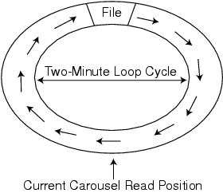

Figure 2:
The carousel from Figure 1 has moved and the file is no longer accessible. The application must wait an additional minute for the carousel to loop around to access the file.
Back to Article